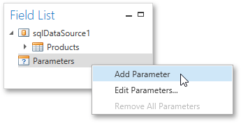
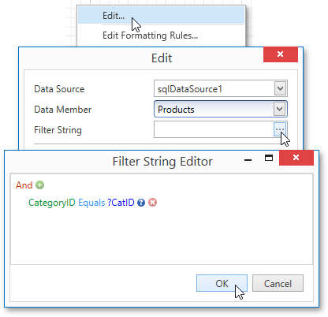
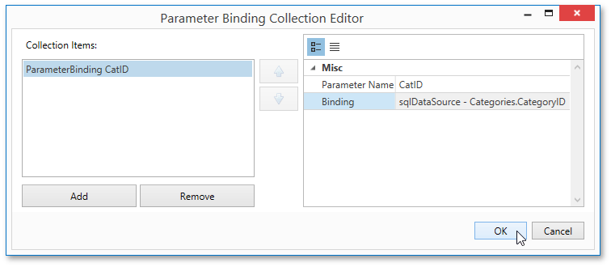

Master-Detail Report (Subreports)
This tutorial describes the steps needed to create a master-detail report with hierarchically linked data using the Subreport control. For an alternative approach, refer to Master-Detail Report (Detail Report Bands).
To create a master-detail report using the subreport controls, do the following.
Create a Master Report
Create a new report and bind it to a data source. This report will be used as the master report.
Drop the required fields from the Field List panel onto the Detail band. In this example, the following report layout is used.

Drag the Subreport control from the Toolbox and drop it onto the Detail band.

Create and Customize the Detail Report
Next, add one more blank report and bind it to the same data source. It will be used as a detail report.
Drop the required fields from the Field List panel onto the Detail band. This tutorial uses the following layout for the detail report.

To add a parameter to the report, right-click the Parameters section in the Field List and choose Add Parameter in the invoked context menu.

In the invoked Add New Parameter dialog, specify its options as shown in the image below.

Select Edit... in the report's context menu. Then, in the Edit dialog, click the ellipsis button for the Filter String property.
In the invoked Filter String Editor, construct an expression where the Category ID data field is compared to the CatID parameter. To access the parameter, click the icon on the right until it turns into a question mark.

To save the detail report, click the Save As
 button in the Toolbar. Then, in the invoked standard Save dialog, specify the folder and file name.
button in the Toolbar. Then, in the invoked standard Save dialog, specify the folder and file name.
Embed the Subreport
Next, switch back to the master report. Right-click the subreport and select Edit... in the invoked context menu. In the Edit dialog, click the ellipsis button for the Report Source URL property and select the previously saved detail report.

Then, bind the subreport's CatID parameter used as a filtering criterion to the master report's CategoryID data field, which will serve as a source of the parameter value. To do this, select Edit Parameter Bindings... in the subreport's context menu.

This will invoke the Parameter Binding Collection Editor. Click Add to add new binding. In the binding properties list, specify the data field to which you want to bind a subreport parameter and the name of the parameter that you want to bind.

Get the Result
The master-detail report is now ready to be generated. You can view the result by switching to the Print Preview tab.